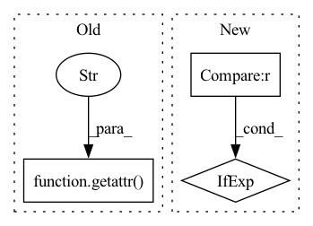

Pattern ID :22492
Before Change
self._properties["_module_subtrees"].add(name)
def tree_flatten(self):
annotations = getattr( self.__class__, "__annotations__" , {})
fields = vars(self)
_tree = {}
_not_tree = {}After Change
name_to_kind = self._name_to_kind
for name, value in fields.items():
(_tree if name in name_to_kind else _not_tree)[name] = value
return _tree.values(), (_tree.keys(), _not_tree)
In pattern: SUPERPATTERN
Frequency: 3
Non-data size: 3
Instances Fragment ID: 71039889
Project Name: ntt123/pax
Commit Name: cf57b202963207d8e289c812a05d59b9713271d6
Time: 2021-08-30
Author: 9960521+NTT123@users.noreply.github.com
File Name: pax/module.py
M Class Name: Module
N Class Name: Module
M Method Name: tree_flatten(1)
N Method Name: tree_flatten(1)
M Parent Class:
N Parent Class:
M File Name: pax/module.py
N File Name: pax/module.py
M Start Line: 63
M End Line: 94
N Start Line: 95
N End Line: 102
Before Change
strategy.hybrid_configs = {
"dp_degree": getattr(args, "dp_degree", 1),
"mp_degree": world_size,
"pp_degree": getattr( args, "pp_degree" , 1) ,
"sharding_degree": getattr(args, "sharding_degree", 1),
}
After Change
def load_model(args: str, model_class: Type[PretrainedModel]):
config = BloomConfig.from_pretrained(args.model_name_or_path)
dtype = "float32" if config.dtype is None else config.dtype
paddle.set_default_dtype(dtype)
// Detecting last checkpoint. Fragment ID: 71039888
Project Name: paddlepaddle/paddlenlp
Commit Name: 0d1cba43ca0eb4984715f3c807fde7345e80ca40
Time: 2023-04-06
Author: fangzeyang0904@hotmail.com
File Name: examples/language_model/bloom/utils.py
M Class Name: AnonimousClass
N Class Name: AnonimousClass
M Method Name: load_model(2)
N Method Name: load_model(2)
M Parent Class:
N Parent Class:
M File Name: examples/language_model/bloom/utils.py
N File Name: examples/language_model/bloom/utils.py
M Start Line: 157
M End Line: 198
N Start Line: 116
N End Line: 150
Before Change
metrics, batch_images_counter = calc_batch_prediction_accuracy(preds, targets, height, width,
self.iou_thres)
acc_metrics = getattr( self, "metrics" )
setattr(self, "metrics", acc_metrics + metrics)
def compute(self):After Change
_, _, height, width = inputs.shape
targets = target.clone()
crowd_targets = torch.zeros(size=(0, 6), device=device) if crowd_targets is None else crowd_targets.clone()
preds = self.post_prediction_callback(preds, device=device)
Fragment ID: 71039892
Project Name: deci-ai/super-gradients
Commit Name: 90fb0a6d0e7aa883b1f583c9c83b4c2d3525e9d2
Time: 2022-07-28
Author: 80472096+shaydeci@users.noreply.github.com
File Name: src/super_gradients/training/metrics/detection_metrics.py
M Class Name: DetectionMetrics
N Class Name: DetectionMetrics
M Method Name: update(6)
N Method Name: update(6)
M Parent Class: Metric
N Parent Class: Metric
M File Name: src/super_gradients/training/metrics/detection_metrics.py
N File Name: src/super_gradients/training/metrics/detection_metrics.py
M Start Line: 136
M End Line: 150
N Start Line: 65
N End Line: 93